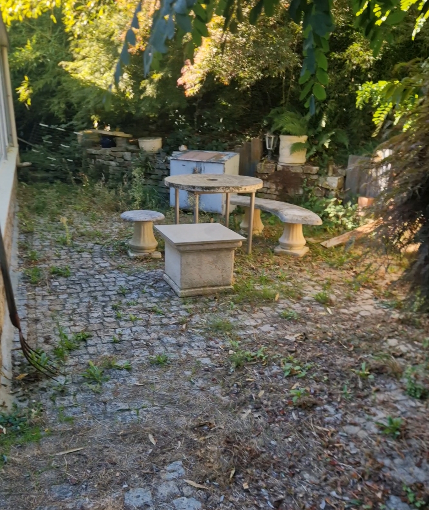
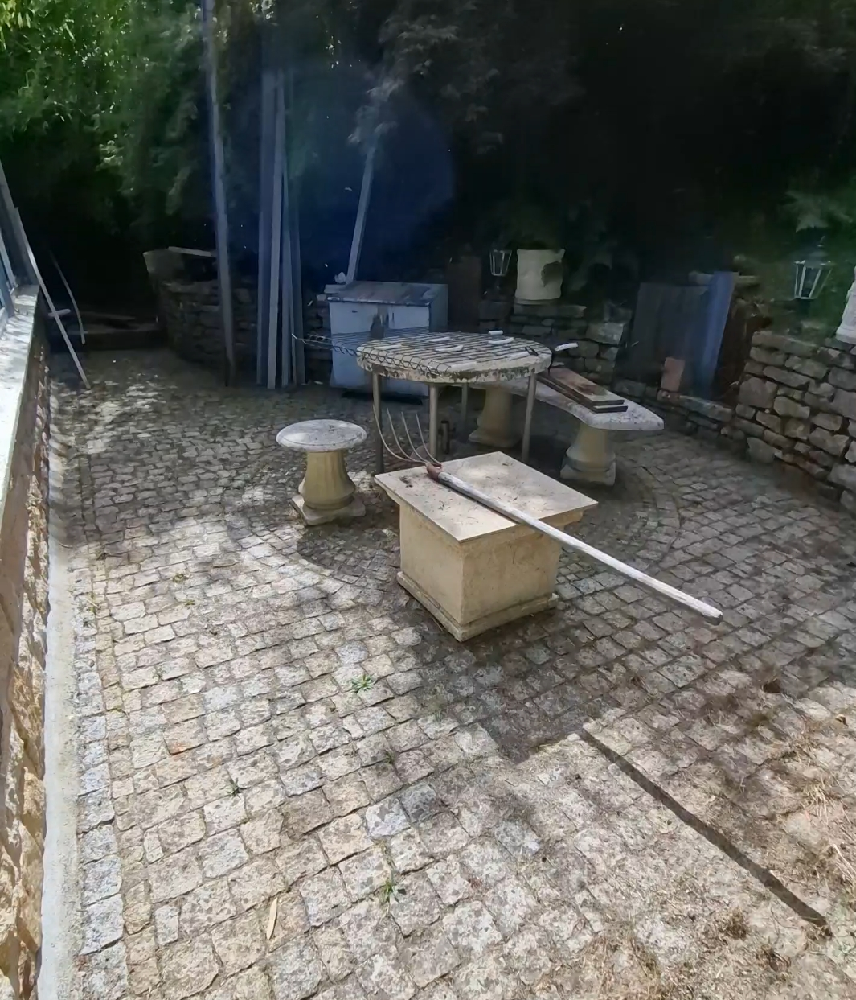
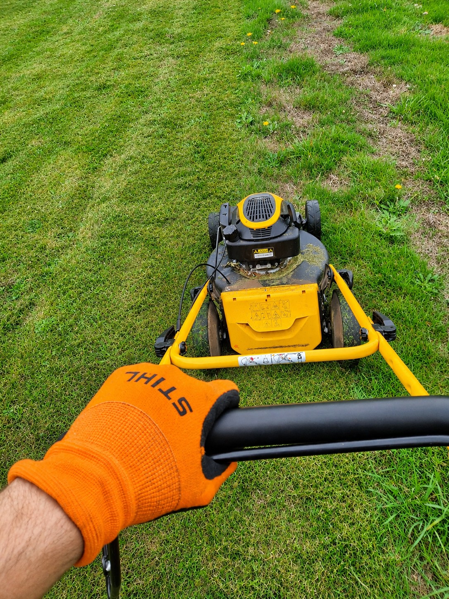
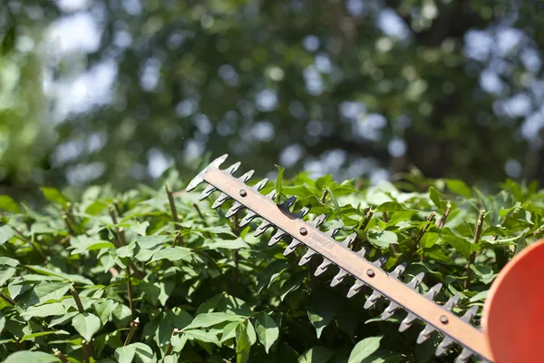
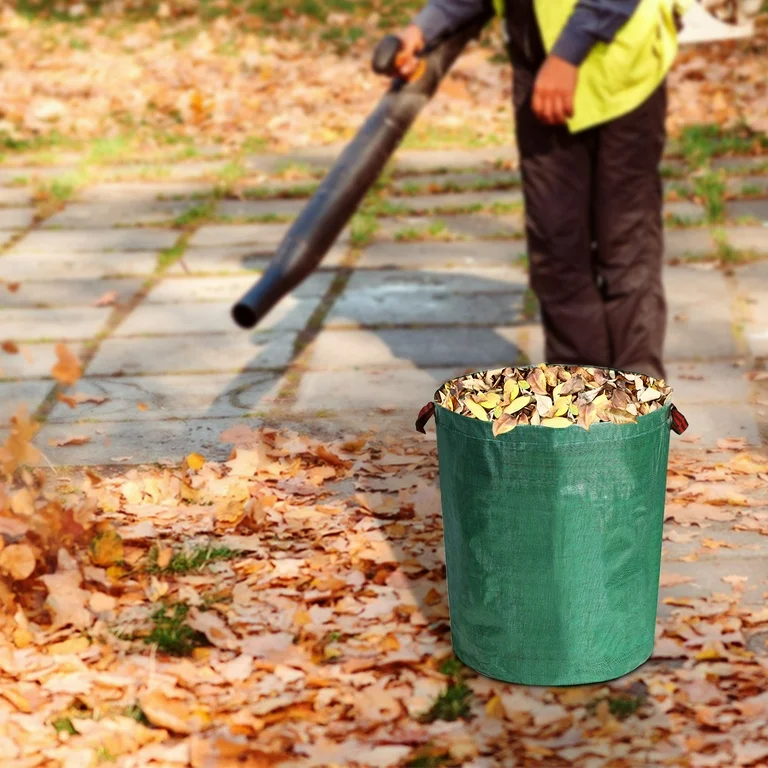

AVANT
APRÈSDésherbage
Nettoyez vos allées, massifs et espaces extérieurs pour limiter les mauvaises herbes et garder un jardin propre.
Edénélia · Entretien des espaces verts
Prenons soin de vos extérieurs grâce à des prestations d'entretien adaptées à votre jardin et à vos besoins.
Demander un devis →Des interventions soignées pour conserver un extérieur propre, agréable et bien entretenu.

AVANT
APRÈSNettoyez vos allées, massifs et espaces extérieurs pour limiter les mauvaises herbes et garder un jardin propre.

Profitez d'une pelouse entretenue et harmonieuse grâce à une tonte régulière adaptée à votre jardin.

Maîtrisez le développement de vos haies et arbustes tout en préservant l'esthétique de votre extérieur.

Après vos travaux de jardinage, faites évacuer vos déchets verts pour retrouver un espace propre et dégagé.
Échangeons sur vos besoins et trouvons ensemble les solutions adaptées à votre extérieur.
Parlons de votre projet →